No resources match that search.

AccuKnox CNAPP
Zero Trust CNAPP with integrated CSPM, CWPP, KSPM, ASPM. Features runtime protection via KubeArmor with eBPF/LSM and inline mitigation.

Wiz CNAPP
Agentless CNAPP with security graph technology for visualizing attack paths across AWS, Azure, GCP, OCI, and Alibaba Cloud.

Sysdig Secure
CNAPP leveraging open-source Sysdig and Falco for deep runtime threat detection with eBPF monitoring.

Orca Security
Agentless CNAPP with side-scanning technology and attack path analysis showing real-world exploitation scenarios.

Aikido Security
Unified code-to-cloud platform combining CSPM, CWPP, SAST, SCA. Traces issues from runtime back to IaC source code.

Fidelis Security Halo
CNAPP with patented 2MB microagent technology for Windows/Linux with self-installing capabilities.

Shodan
Search engine for Internet-connected devices. Essential for cloud asset discovery and reconnaissance.

ZoomEye
Cyberspace search engine for discovering exposed services and devices.

Censys
Internet scanning and attack surface management platform.

LeakIX
Search engine for exposed data and misconfigurations.

DNSDumpster
DNS reconnaissance and research tool for discovering domain assets.

Security Trails
DNS and domain intelligence for attack surface discovery.

grep.app
Search across 500K+ GitHub repositories for code, credentials, and configurations.

Dorksearch
Google dork search tool for finding exposed information.

Packet Storm
Information security news, files, and exploits database.

Exploit-DB
Archive of public exploits and vulnerable software.

CloudVulnDB
Open-source database of cloud security vulnerabilities.
isotope¹³ Supply-Chain Attack Compendium
Research database of supply-chain attacks from 1975 to 2026, indexed by year, vector, and payload insertion point.

OWASP
Open Web Application Security Project with cloud security resources.

Cloud Katana
Cloud adversary emulation tool for testing detection capabilities.

ScoutSuite
Multi-cloud security auditing tool for AWS, Azure, GCP, and more.

ReARM
ReARM - Release-Level Supply Chain Evidence Platform. ReARM stores and manages SBOMs, xBOMs, SAST / DAST scan results, Attestations, and other Security Artifacts.

Saner CNAPP
CNAPP integrating CSPM, CIEM, CWPP with AI-driven monitoring and automated remediation.

Datadog Cloud Security
Real-time threat detection with compliance automation for DevSecOps workflows.

FortiCNAPP (formerly Lacework)
AI-powered CNAPP with ML anomaly detection and automated threat response. Formerly Lacework Polygraph.

SentinelOne Cloud
AI-powered threat detection for cloud workloads with runtime protection.

Check Point CloudGuard
Unified security across applications, networks, and workloads with AI-driven threat prevention.

CrowdStrike Falcon Cloud
Identity-centric cloud security with continuous monitoring and least-privilege enforcement.

Palo Alto Prisma Cloud
Comprehensive CNAPP with end-to-end security from code to cloud.

Prowler
Leading open-source multi-cloud security assessment tool. 500+ checks across AWS, Azure, GCP, and Kubernetes mapped to CIS, PCI-DSS, and HIPAA.

Steampipe
Query cloud APIs with SQL. 140+ plugins for AWS, Azure, GCP, Kubernetes, and SaaS - ideal for asset inventory and ad-hoc security investigations.

Checkov
Open-source IaC scanner for Terraform, CloudFormation, Kubernetes, Helm, and Dockerfiles. 1,000+ built-in policies and custom Python or YAML rules.

Trivy
Aqua's all-in-one open-source scanner. CVEs, misconfigurations, secrets, and SBOMs across containers, IaC, and Kubernetes - the de facto standard for image scanning.

Kubescape
CNCF-hosted Kubernetes security platform. Scans clusters and IaC against NSA-CISA, MITRE ATT&CK, and CIS Kubernetes frameworks with remediation guidance.

Falco
CNCF graduated runtime security engine using eBPF to detect anomalous container, host, and Kubernetes activity. The reference project behind many CNAPP runtime modules.

CloudFox
Bishop Fox's offensive cloud enumeration CLI. Surfaces AWS and Azure attack paths, exposed services, IAM trust relationships, and secrets in user data.

gitleaks
Fast open-source secret scanner for git history, commits, and files. Runs locally, in pre-commit hooks, or as a GitHub Action to catch credentials before they ship.

Pacu
Rhino Security Labs' open-source AWS exploitation framework. 80+ modules for enumeration, privilege escalation, and persistence - the standard tool for offensive cloud testing.

Cloud Custodian
Capital One's open-source policy-as-code engine for AWS, Azure, and GCP. Write YAML rules that detect and auto-remediate misconfigurations across cloud estates.

Stratus Red Team
Datadog's open-source cloud attack emulation framework mapped to MITRE ATT&CK. Detonates safe attack scenarios across AWS, Azure, GCP, and K8s to validate detections.

Cilium
CNCF graduated eBPF networking and security platform for Kubernetes. Provides L3-L7 network policies, transparent encryption, and Hubble flow observability.

Open Policy Agent (OPA)
CNCF graduated policy engine using the Rego language. Unified policy-as-code across Kubernetes admission, Terraform, Envoy, and microservice APIs.

Semgrep
Lightweight SAST tool with pattern-matching rules covering secrets, insecure SDK usage, and IaC misconfigurations. Free CLI and OSS rules; commercial tier adds a platform.

Kyverno
CNCF Kubernetes policy engine using YAML rules. Validates, mutates, and generates resources at admission and audits existing clusters - no dedicated policy language.

Sigstore
OpenSSF keyless signing for container images and SBOMs via short-lived OIDC certs and a transparency log. Adopted by Kubernetes, npm, PyPI, and major registries.

TruffleHog
Open-source secret scanner that verifies leaked credentials by calling the upstream API, across git, S3, Docker, Slack, Jira, and more. Cuts false-positive triage sharply.

OpenSSF Scorecard
OpenSSF tool that scores repos on branch protection, signed releases, dependency hygiene, and known vulnerabilities. Used to set minimum bars on open-source dependencies.

KICS by Checkmarx
Open-source IaC scanner with 2,400+ queries for Terraform, CloudFormation, Kubernetes, Helm, Docker, and Ansible. Built for fast CI gates.

Grype
Open-source vulnerability scanner for container images and filesystems from Anchore. Pulls NVD, GHSA, and distro feeds; pairs with Syft for SBOMs.

CISA ScubaGear
ScubaGear is an assessment tool that verifies that a Microsoft 365 tenant's configuration conforms to the policies described in the SCuBA Secure Configuration Baseline documents, covering Entra ID, Exchange, Teams, SharePoint, OneDrive, Defender, and Power Platform.

Syft
Open-source SBOM generator for container images and filesystems. Outputs SPDX and CycloneDX; pairs with Grype for downstream scanning.

CloudQuery
Open-source cloud asset inventory that syncs config from AWS, Azure, GCP, and Kubernetes into SQL for plain-query posture checks.

OWASP ZAP
Flagship open-source DAST proxy for active scanning, fuzzing, and intercepting web app traffic. Ships with CI automation and a REST API.
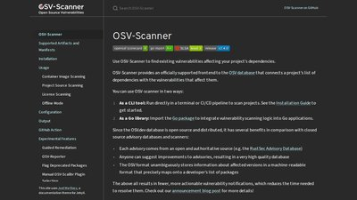
OSV-Scanner
Google's open-source scanner backed by OSV.dev. Runs against lockfiles, SBOMs, and container images across npm, PyPI, Go, Maven, and Linux distros.
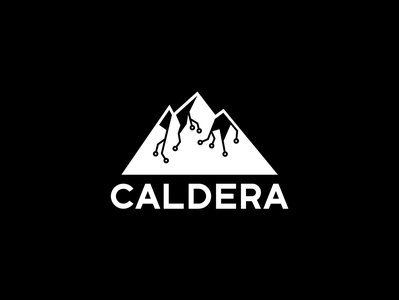
MITRE Caldera
Open-source adversary emulation platform built on ATT&CK. Scripts multi-stage attack chains for detection benchmarking and purple-team exercises.
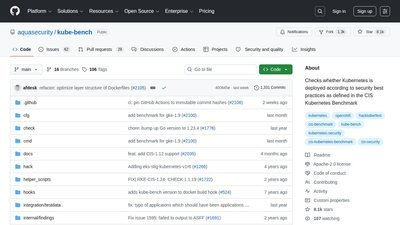
kube-bench
Open-source CIS Kubernetes Benchmark checker from Aqua Security. Runs as a Job with specific checks for EKS, GKE, AKS, and RKE clusters.
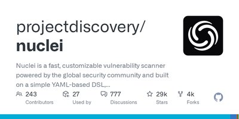
Nuclei
ProjectDiscovery's fast template-driven vulnerability scanner. Thousands of YAML templates for CVEs, misconfigurations, and exposed panels - the de facto OSS scanner.
BloodHound Community Edition
SpecterOps' attack-path graph for Active Directory and Entra ID. Surfaces hybrid identity chains from on-prem AD into Azure cloud roles.
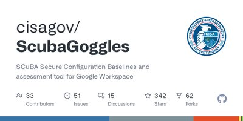
CISA ScubaGoggles
CISA's automated assessment for Google Workspace against the SCuBA baselines - the Workspace counterpart to ScubaGear. Outputs an HTML report of findings.
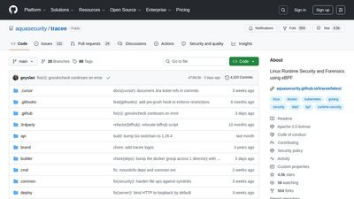
Tracee
Aqua Security's open-source eBPF runtime security tool for Linux hosts and Kubernetes nodes. Rego-based detection with SIEM streaming.
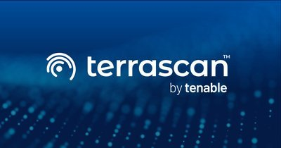
Terrascan
Tenable's open-source IaC static analyzer covering Terraform, CloudFormation, Kubernetes, Helm, and Kustomize. Extensible via OPA/Rego.
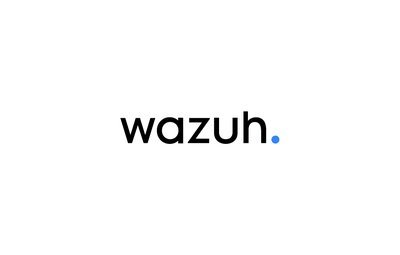
Wazuh
Open-source SIEM and XDR with cloud workload protection for AWS, Azure, GCP, and containers. Detection rules mapped to MITRE ATT&CK and compliance controls.

Cartography
Open-source tool that maps cloud and SaaS assets into a Neo4j graph so you can query attack paths and exposure across AWS, GCP, Azure, and more.
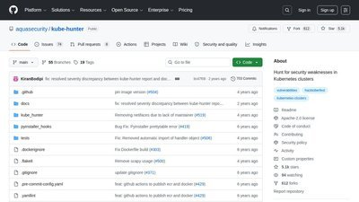
kube-hunter
Open-source Kubernetes penetration-testing tool that probes clusters for exposed services and misconfigurations from an attacker's perspective.
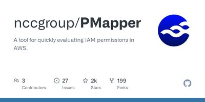
PMapper
Open-source tool that graphs AWS IAM to identify privilege-escalation and lateral-movement paths between principals.
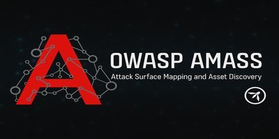
OWASP Amass
Attack-surface mapping tool that enumerates subdomains and cloud-facing infrastructure from many OSINT sources.
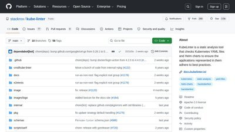
KubeLinter
Static analysis tool that checks Kubernetes manifests and Helm charts for security and configuration best practices.
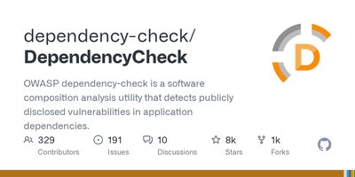
OWASP Dependency-Check
Software composition analysis tool that flags project dependencies containing known CVEs, with build-pipeline integration.
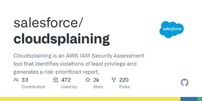
Cloudsplaining
Scans AWS IAM policies for least-privilege violations and generates a risk-prioritized HTML report.
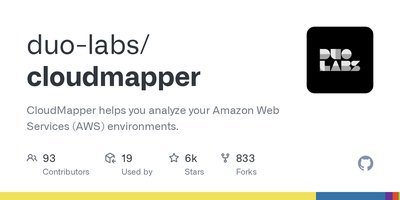
CloudMapper
Analyzes AWS environments to audit for misconfigurations, public exposure, and IAM issues across accounts.
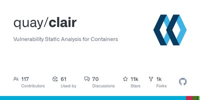
Clair
Static vulnerability scanner for container images, matching layers against known CVEs via an API for CI and registries.
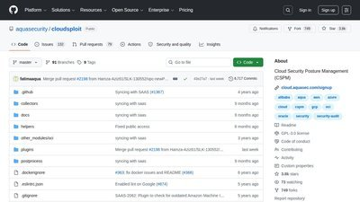
CloudSploit
Open-source multi-cloud CSPM that scans AWS, Azure, GCP, and Oracle accounts against hundreds of misconfiguration checks.
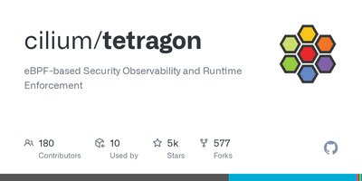
Tetragon
eBPF-based runtime security and observability tool from the Cilium project, with in-kernel detection and enforcement.
kubeaudit
Command-line auditor that checks Kubernetes clusters and manifests against common workload-hardening controls.
HashiCorp Vault
Open-source secrets manager providing dynamic short-lived credentials, encryption as a service, and audit logging across cloud environments.
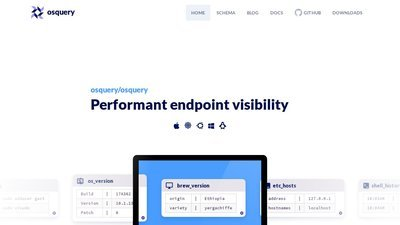
osquery
Query your endpoints and cloud hosts like a SQL database for fleet visibility, threat hunting, and misconfiguration detection.
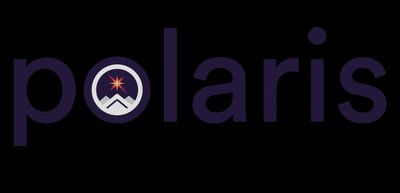
Polaris
Open-source Kubernetes best-practice checker for security and reliability - run it as a dashboard, admission controller, or CI gate.
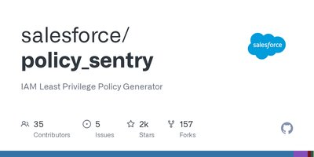
Policy Sentry
Open-source generator that builds least-privilege AWS IAM policies from access levels and resource ARNs, and audits existing ones.
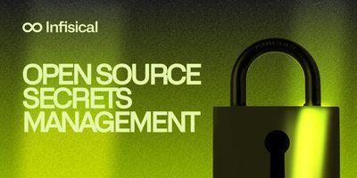
Infisical
Open-source, end-to-end encrypted secrets management with a CLI, native cloud integrations, versioning, and leak scanning.
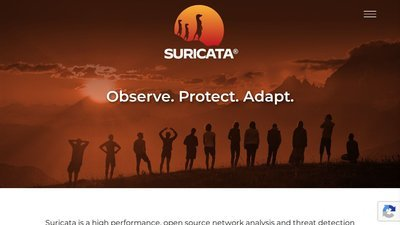
Suricata
Open-source IDS, IPS, and network security monitoring engine that inspects traffic against rulesets and scales across CPU cores.
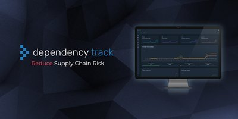
OWASP Dependency-Track
OWASP flagship SBOM analysis platform that tracks component vulnerabilities across your whole application portfolio and flags newly disclosed CVEs automatically.
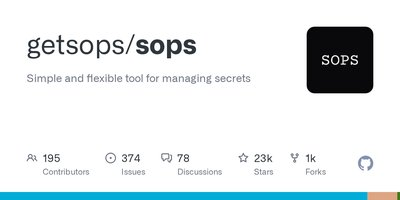
SOPS
Encrypts secrets inside YAML/JSON/ENV files - values only, keys stay readable - backed by AWS KMS, GCP KMS, Azure Key Vault, age, or PGP. A GitOps secrets staple.
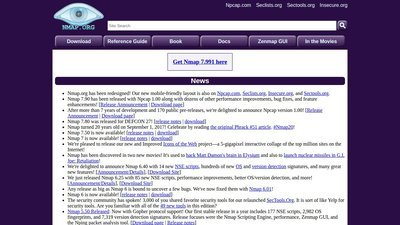
Nmap
The standard network scanner for host discovery, port and service enumeration, and OS fingerprinting, extensible via the Nmap Scripting Engine.
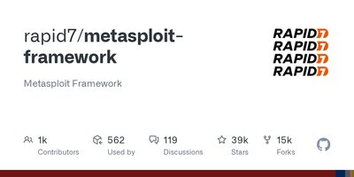
Metasploit Framework
The de facto open-source exploitation and penetration-testing framework, with thousands of exploits, payloads, and post-exploitation modules.
Wireshark
Industry-standard open-source packet analyzer for capturing and inspecting network traffic across hundreds of protocols.
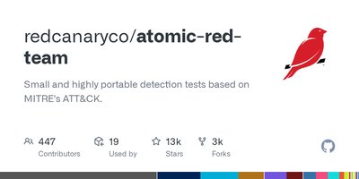
Atomic Red Team
Open-source library of ATT&CK-mapped adversary emulation tests for validating detections across endpoints and cloud.
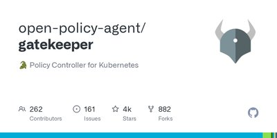
OPA Gatekeeper
CNCF admission controller that enforces OPA policies in Kubernetes, blocking non-compliant resources before they deploy.
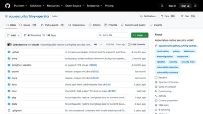
Trivy Operator
Kubernetes operator that continuously scans running workloads for vulnerabilities, misconfigurations, and exposed secrets.
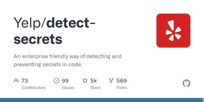
detect-secrets
Pluggable secrets scanner for pre-commit hooks that catches credentials before they reach a repo, with a baseline for existing code.
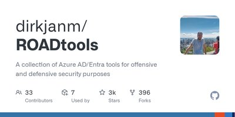
ROADtools
Framework for enumerating and analyzing Microsoft Entra ID (Azure AD) to surface risky identity and access configurations.
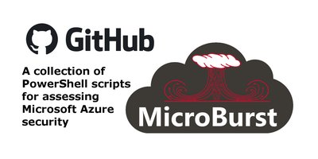
MicroBurst
PowerShell toolkit for Azure security assessments covering enumeration, credential hunting, and privilege escalation.
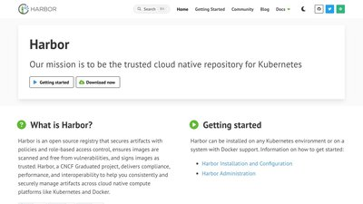
Harbor
CNCF container registry with built-in vulnerability scanning, image signing, and policy controls for the software supply chain.
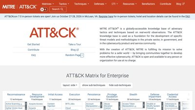
MITRE ATT&CK
The knowledge base of adversary tactics and techniques, with matrices for IaaS, SaaS, identity providers and containers.
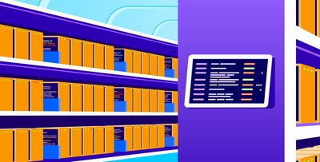
Pathfinding.cloud
Datadog Security Labs' catalogue of AWS IAM privilege-escalation paths, each with detection guidance and a way to demonstrate it.
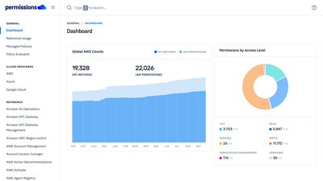
aws.permissions.cloud
Searchable reference for every AWS IAM action, managed policy and the API calls behind them.
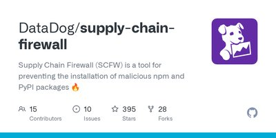
Supply-Chain Firewall
Wraps pip and npm installs and blocks packages known to be malicious before they reach your machine.
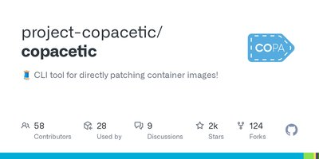
Copacetic (Copa)
CNCF project that patches OS-package vulnerabilities directly in container images, without a full rebuild.
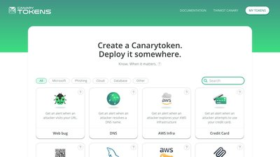
Canarytokens
Free tripwires from Thinkst: fake AWS keys, documents, URLs and more that alert you the moment someone touches them.
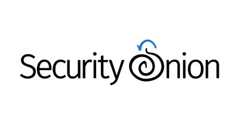
Security Onion
Free, open platform for threat hunting, network security monitoring and log management.
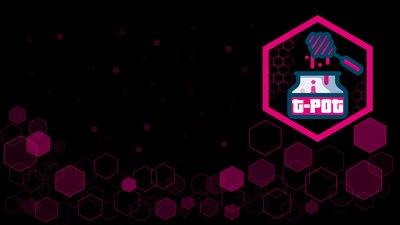
T-Pot
Deutsche Telekom's all-in-one multi-honeypot platform, with dashboards for the attacks it collects.
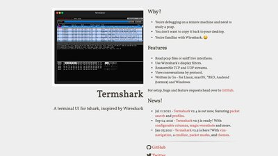
Termshark
A terminal UI for tshark, for inspecting packet captures over SSH or anywhere a GUI isn't available.
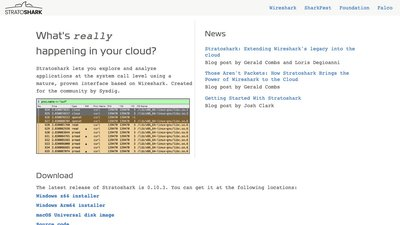
Stratoshark
Wireshark's sibling for system calls and log events, built on the Falco libraries.
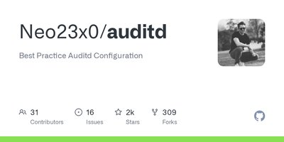
auditd Best-Practice Rules
Florian Roth's best-practice auditd rule set for Linux hosts, a widely used starting point for host telemetry.
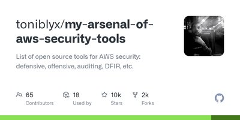
My Arsenal of AWS Security Tools
Toni de la Fuente's curated list of open-source AWS security tools: defensive, offensive, auditing and DFIR.
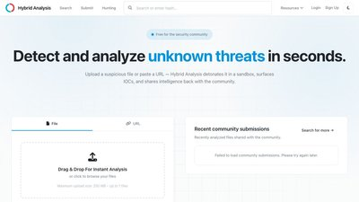
Hybrid Analysis
Free malware analysis sandbox from CrowdStrike: submit a file or URL and get a behavioral report.

GreyNoise
Tells you whether an IP hitting you is internet-wide scanning noise or something targeting you specifically.
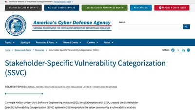
CISA SSVC
CISA's decision-tree method for prioritizing vulnerabilities by exploitation, exposure and mission impact rather than CVSS alone.
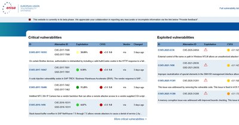
ENISA EU Vulnerability Database
The EU's vulnerability database, run by ENISA under NIS2, with views of critical and actively exploited vulnerabilities.
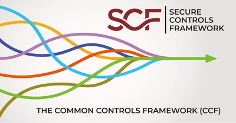
Secure Controls Framework
Free meta-framework of 1,000+ security controls mapped across the major laws, regulations and frameworks.
Comp AI
Open-source compliance automation for SOC 2, ISO 27001, HIPAA and GDPR, positioned as a Vanta or Drata alternative.
breaches.cloud
Chris Farris's catalogue of public cloud security breaches: what happened and which mistakes made it possible.
Wiz Vulnerability Database
Curated CVE database with cloud context: affected technologies, exploitation status and remediation.